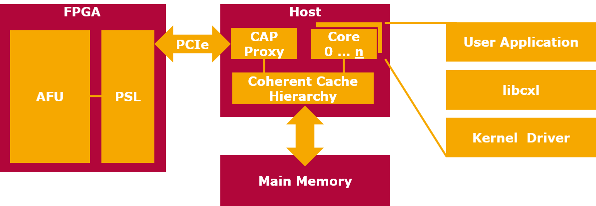
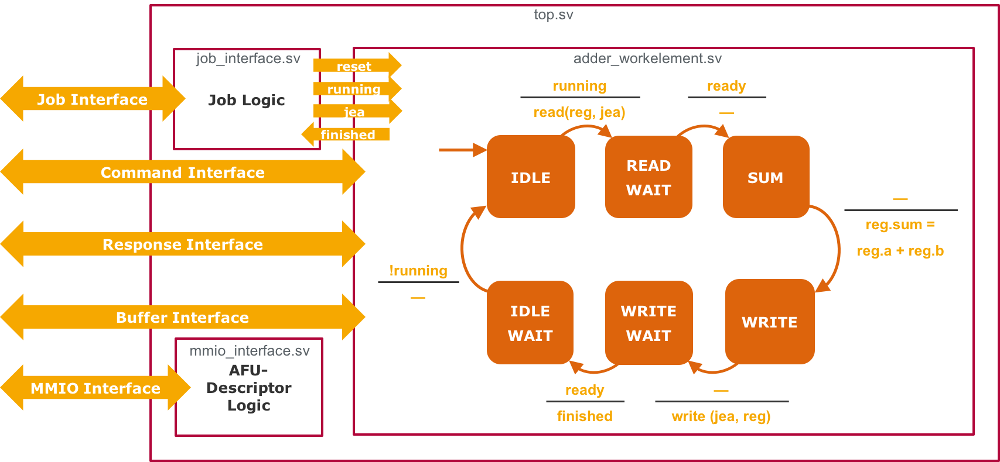
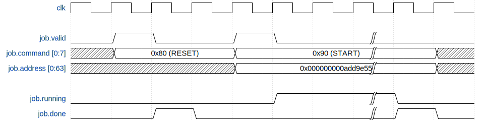
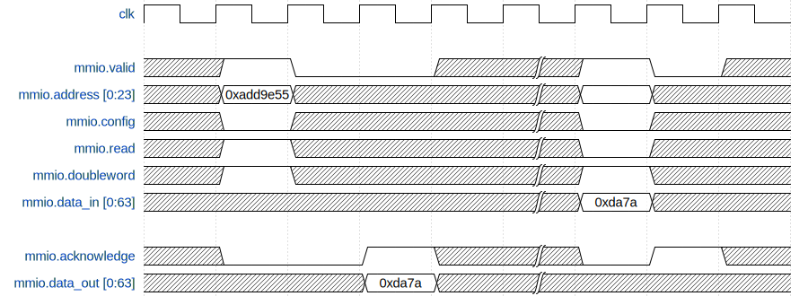
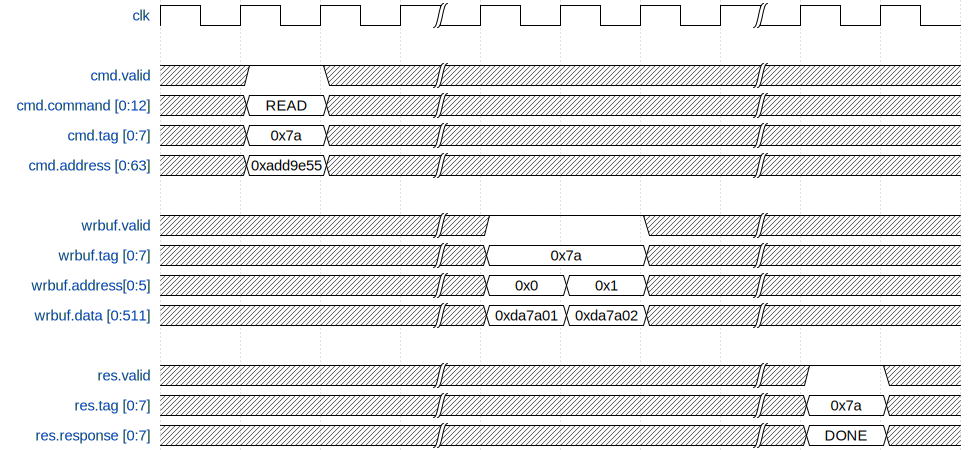
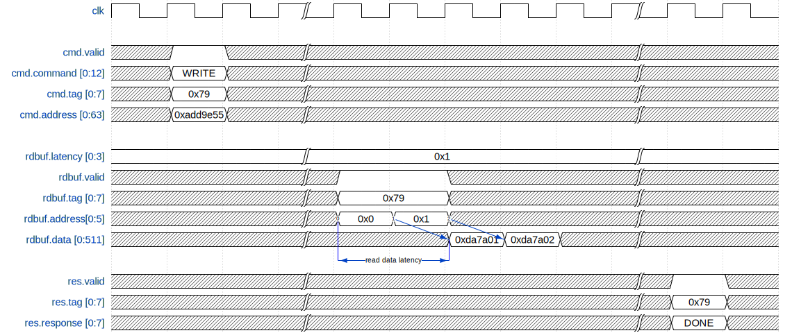

What is CAPI?
CAPI, the Coherent Accelerator Processor Interface is an interface standard introduced with IBMs POWER8 server architecture. As the name suggests, it enables accelerators (i.e. FPGAs) to be part of the system's coherent cache hierarchy and memory subsystem formerly only available to CPU cores. Consequently, while former technologies mapped the accelerator to its specific IO memory area, where data had to be copied to explicitly, an accelerator connected via CAPI can access the same virtual address space as its controlling process.
Architecture

CAPI Block Diagram
The block diagram above shows that CAPI consists of several components distributed among the accelerator and host CPU: The logic on the FPGA is split into the application specific AFU (Accelerator Function Unit) part, that implements the accelerator hardware proper, and the PSL (Power Service Layer). The latter is a fixed design provided by IBM, that implements the interface logic necessary to provide cached virtual host memory access and job management services to the AFU.
The PSL communicates with the host part of the CAPI hardware, the Coherent Accelerator Processor Proxy (CAPP) via PCIe. The CAPP is part of the POWER CPU and from the point of view of the memory subsystem it has the same status as a processor core.
The software part of CAPI, running on regular processor cores, consists of a driver in the linux kernel that exposes cxl devices representing an installed CAPI accelerator card. To encapsulate the interaction with raw cxl devices via read/write and ioctl systemcalls, libcxl provides a C API with the same functionality. Any user application, given sufficient privileges to interact with the cxl device, can use functions from and link against libcxl and thereby use the functions implemented by the AFU on any installed accelerator card.
Development Concepts
Besides using libcxl to initialize and attach a CAPI accelerator to the current process, the hardware design of the AFU constitutes the central part of CAPI development.
The AFU is a piece of logic that was configured into the FPGA and therefore the design of the AFU must be expressed in a hardware description language such as VHDL or Verilog. Such language differ significantly from imperative languages like C in that most statements have concurrent semantics as they translate to separate parts of hardware that operate independently from one another. If an algorithm requires several sequential steps, it must be represented in hardware as a state machine.
The interface between PSL and AFU is complex and enables an efficient operation and communication with the PSL, but imposes higher efforts on an AFU developer: In order to perform a single read operation three concurrent interfaces must be controlled and monitored, requiring additional states in the AFU state machine. An example provides the figure below, that depicts the structure and state machine of a simple AFU that does nothing more than add two numbers stored in host memory.

State Machine model of the Adder AFU
The AFU-PSL interface consists of five semi-independent sets of signals, the Job-, Command-, Response-, Read/Write-Buffer- and MMIO-Interface:
- The Job-Interface is controlled by the PSL and indicates job control and reset commands from the host to the AFU.
- The MMIO-Interface exposes a register view of the AFU to the host that can map this view into its virtual memory to control and monitor the AFU.
- The Command-Interface is controlled by the AFU, which can issue a variety of read or write commands with different side effects on the Cache Hierarchy.
- The remaining interfaces are controlled by the PSL and play a role in completing pending commands: A read command causes the PSL to return the requested data via the Write-Buffer-Interface and signal the command completion via the Response-Interface. To perform a write operation, the PSL would read the data to be written via the Read-Buffer-Interface once required.
JobInterface
Via the job interface the AFU lifecycle is controlled by the PSL. This includes resetting the AFU, initiating jobs and monitoring the AFU's state.
A transaction on the job interface is qualified by the valid signal and contains a command that is either RESET or START. To both commands the AFU reacts by asserting the done signal once the requested operation is complete. This might be immediately after assertion of valid, as shown in the first (RESET) transaction in the figure below. Otherwise the AFU can delay done by an arbitrary number of clock cycles thereby blocking the PSL and also any host process waiting for the operation to complete.
If the command is START, it also qualifies the address signal, that contains the address of the job structure the AFU is meant to work on. As long as the AFU is working, it has to assert the running signal.

MMIO Interface
The MMIO (Memory Mapped IO) interface allows the User Design to provide a register based view of the job-independent part of its state and configuration. This view can be mapped into the address space of a host process, which can thus configure the operation of the afu. The same interface is also used by the host to access the AFU Descriptor space, which contains registers with a standardized format (as specified in section 4 of the Manual) that specify the capabilities of the afu device.
A transaction on the MMIO interface is initiated by the PSL with the assertion of the the valid line. This qualifies the register address, the read/write select, the word/doubleword select and the descriptor/user space select lines. A transaction is finished when the User Design asserts the acknowledge line. For a write transaction the data is presented on the data_in signal while valid is asserted, while a read transaction requires the data to be driven on the data_out signal together with the assertion of acknowledge. The figure below illustrates both a read and a write transaction on the MMIO interface. Please note that the time from the recognition of the valid assertion to the assertion of the acknowledge line can be freely chosen by the user design. In the example below this time is one clock cycle for the read operation and zero clock cycles for the write operation.

Command Interface, Response Interface, Buffer Interfaces
Even though the Manual describes them as separate interfaces, the Command, Response and Buffer interfaces are closely coupled in terms of operation semantics. Together they are used by the User Design to exchange data via and manage the cache of the PSL interface. Any such operation is initiated on the Command interface that besides the operation and its parameters (address, ordering criteria, …) establishes a tag value to identify transactions on the other interfaces that are related to this particular operation. This is necessary because multiple operations can be pending at any given time. If an operation is completed, this fact is reported on the Response interface with a response code indicating success or different types of failures. Read or write operations are performed with the granularity of one cache line which is equivalent to 128 Bytes/1024 Bits of data. The respective Read Buffer and Write Buffer interfaces are only 512 bits wide so that a complete transfer requires 2 cycles. Each interface indicates by an address line whether the higher or lower portion of the cache line should be accessed by a transaction. There are no restrictions on the order, timing and count of transactions on the Read or Write Buffer interface relating to a single pending command. The same data might be read or written multiple times in which case the data read/written in the most recent transaction is considered valid. It might be noted that the naming of the Read Buffer and Write Buffer interface are chosen from the perspective of the PSL while commands are named according to the User Design perspective. That means, that a write operation requires the User Design to supply the intended data via the Read Buffer interface while a read operation causes the resulting data to be sent via the Write Buffer interface. On the Command, Response, and Write Buffer interface a transaction spans exactly one clock cycle. The respective valid line qualifies the remaining signals. The Read Buffer interface also allows for a transaction to be started on every clock cycle, but each individual transaction finishes after a specific latency that the User Design requires to supply the requested data.
The signal trace in the figure below illustrates a possible transaction sequence for a read command. Some less important signals were omitted from the trace. These include the parity lines that accompany most multibit signals to support error detection. The mapping of the signal names in the trace and those in the Manual is listed in the appendix.

The figure below shows the progress of a write operation that uses the Read Buffer interface. Please note that the specified read data latency of 1 cycle is not counted from the clock edge of the assertion of the valid line, buf from the edge on that the User Design recognizes its assertion, which is one clock cycle later. Therefore there is a 2 cycle delay between the assertion of the valid line and the driving of the data signals. If the specified read data latency would be 3 (the only other supported value) this delay would increase to 4 cycles.
